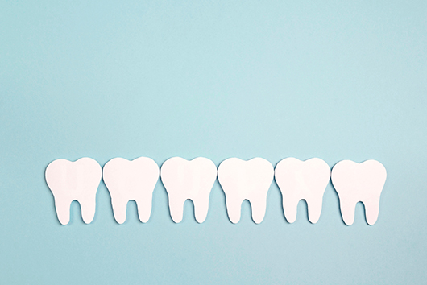

- ホーム
- 高校生の矯正治療
矯正治療をお考えの高校生・親御様へ
高校生になると、外見を意識する方が男女問わずに増えてきます。しかし、歯並びの悪さが気になって矯正歯科治療に興味を持っても、「ワイヤーが目立つのはイヤ」「痛みや通院で部活や勉強に影響が出たら…」となかなか一歩を踏み出せないお子さまや親御さんもいらっしゃいます。
一方で、高校生の時期は歯が動くスピードが早く、矯正歯科治療を行うには最適な時期なのです。高校生のうちに矯正治療をしておくことで、大学生活や就職、結婚や将来の健康に多くのメリットがもたらされます。
川崎市・たまプラーザの矯正治療専門医院「くらしま矯正歯科」は、見た目を気にする高校生でも矯正治療を行いやすい裏側矯正（舌側矯正）に特化した医院です。高校生の矯正治療にお悩みの方は、お気軽にご相談ください。
このようなお悩みはありませんか？
歯並びについて、以下のようなお悩みをお持ちの高校生やその親御さんは多いかもしれません。
- 歯並びが悪くて写真に写ることが苦手
- 口元が気になって思いきり笑えない
- ワイヤー矯正をしたいけど目立つから恥ずかしい
- 矯正治療をさせてあげたいけど勉強や部活への影響が心配
- 見た目に影響が出なくてもしっかりと効果が出る矯正をさせてあげたい
高校生になると外見に意識が向くようになるため、乱れた歯並びにコンプレックスを抱きやすい年齢です。しかし、矯正装置の見た目も気になり、従来の表側矯正装置では大きなハードルになってしまう可能性が濃厚です。
そのため、当院では高校生の矯正歯科治療においては心理的な負担が少ない方法を選んで治療を進めていくことも重要だと考えています。
成長期に矯正をおすすめする理由
顎の骨格や歯並びが完成に近づいてく高校生の時期に矯正歯科治療を行うと、治療期間の短縮や費用削減などの恩恵を受けられます。以下では、成長期の高校生に矯正歯科治療をおすすめする理由とメリットを紹介します。
メリット①ほかの年代に比べると治療期間が短い
私たちの口腔内には、歯を支える「歯槽骨（しそうこつ）」とそれを支える「歯根膜（しこんまく）」という組織があります。矯正歯科治療を行うときは、歯根膜に力を加えて伸び縮みさせ、歯槽骨を生成したり壊したりして歯を移動させていきます。
高校生は新陳代謝が活発で細胞の生成が早いため、大人に比べて矯正治療の効果が出るスピードも早いです。治療期間が短縮できるだけではなく、それにともなって治療費用も抑えられるというメリットがあります。
メリット②抜歯しなくても矯正できる可能性が高い
発育が終わるとあごの骨格も完成してしまうため、成人矯正では歯をきれいに収めるために上下の歯を抜歯しなくてはいけなくなるケースがあります。しかし、高校生のうちに矯正を始めておくと、抜歯しなくても歯並びを整えられる可能性が高まります。なぜなら、高校生は顎骨がまだ成長過程であるため、大人では難しい顎骨の調整がしやすいためです。
抜歯しなくても歯を並べるためのスペースを作れるようになると、健康な歯を残したまま治療を進められます。その結果、抜歯による後戻りのリスクを低減できます。

メリット➂不正咬合による健康リスクを減らせる
間違った噛み合わせは、虫歯や歯周病リスクの増加、顔や姿勢の歪み、顎関節症や頭痛・肩こりなどの健康リスクを引き起こします。若いうちは気にならなくても、大人になってから噛み合わせが原因の不調に悩まされる方は少なくありません。
また、歯は力が加わることで常に動き続けてしまうため、不正咬合を放置しているとさらに歯並びが悪くなり、抜歯や手術による処置が必要になるケースもあります。こういった将来的な健康リスクを低減するためにも、早い段階での矯正歯科治療が大切なのです。
メリット④虫歯や歯周病トラブルを防げる
歯並びが悪いとブラッシング時に磨きにくくなり、虫歯や歯周病のリスクが高まってしまいます。歯が重なっている部分もしっかりとブラッシングできれば問題はありませんが、歯の重なりやねじれが多い場合は、日常のお手入れで汚れを落としきることが難しくなってしまいます。虫歯が進行すると被せものをして治療することになり見た目が悪くなりますし、歯周病は歯を失うリスクを高めてしまいます。
大人になると、唾液が減少したりホルモンバランスが変化したりして虫歯や歯周病のリスクが高まります。高校生のうちから矯正歯科治療をして、将来的なリスクから歯を守る準備をすることが大切なのです。
ご家族の方へ
高校生が矯正治療をする際は、装置の破損や怪我を防ぐために注意しておきたいポイントがいくつかあります。効果的に治療を進めるためにも、ご家族の方も一緒に治療時の注意点を徹底して守っていただくようにお願いいたします。
矯正治療中に守っていただきたいルール
| 装着方法を守りましょう | 取り外しが可能なマウスピース矯正を行う場合は、正しく装着できるように見守ってあげてください。間違った使い方をすると装置の破損や変形が起きてしまい、矯正効果が得られなくなってしまいます。 |
|---|---|
| 指定された装着時間を守りましょう。 | 取り外しが可能なマウスピース矯正を行う場合は、指定された時間しっかりと装置を装着できるように、ご家族も一緒に管理しましょう。装着時間を守れないと矯正効果が得られず、治療期間も伸びてしまいます。 |
| 正しくお手入れ・保管しましょう | 矯正装置は、医師の指示通りにお手入れ・保管してください。取り外しが可能な装置は、洗浄液に浸してお手入れして、専用のケースに入れて保管しましょう。固定式の装置は、丁寧にブラッシングして汚れが溜まらないようにケアすることを徹底させてください。 |
| 衝撃を与えないように注意しましょう | 口元に強い衝撃が加わると、矯正装置の破損や口腔内のケガにつながります。治療中は、衝撃を受けないように気をつけて生活するように伝えましょう。 |
| 異変があったらすぐに相談しましょう | 装着中に違和感を覚えたり痛みを感じたりしたら、すぐにご連絡ください。万が一装置が外れてしまったときは部品も一緒にお持ちいただく必要があるため、適切に保管しておいてください。 |
生活での注意点
| 発音しにくくなることがある | 歯の裏側に装置をつける裏側矯正（舌側矯正）の場合、はじめは発音しにくくなることにご注意ください。「さ行」や「た行」が言いにくくなりますが、2～3週間で慣れて違和感がなくなると説明できると、ご本人も安心されるでしょう。 |
|---|---|
| 激しいスポーツを避ける | 矯正装置をつけているときは、破損や怪我を防ぐために激しいスポーツは避けるようにお伝えください。部活などでスポーツをするときは、専用のプラスチックカバーで口腔内を守ることをおすすめします。 |
| 楽器演奏に影響する可能性がある | 吹奏楽器を演奏するときは、矯正装置の影響で音が出にくくなることがあります。ただし、慣れれば問題なく演奏できるようになりますので、ご安心ください。また、マウスピースを口に押し当てて演奏する楽器は、装置が当たって痛みを感じやすいです。この場合もプラスチックカバーなどで対応できる可能性があるため、お気軽にご相談ください。 |
食事の際の注意点
矯正装置をつけている間は、装置が破損してしまったり外れてしまったりしないように、食事に気をつけることも大切です。矯正治療中は、以下のような食材に注意してください。
| 硬い食材 | せんべい、スルメイカ、りんご、ステーキ、とうもろこし など |
|---|---|
| くっつきやすいもの | ガム、チューイングキャンディー、キャラメル、餅 など |
| 絡まりやすいもの | 水菜、ニラ、ネギ、えのき、麺類、筋が多い肉や魚 など |
ただし、上記のような食材であっても、細かく切ってやわらかくなるように調理して少しずつ食べていけば、矯正器具が外れたり痛みを感じたりしにくいです。「矯正に悪いから」と、特定の食材を完全に避けて食事をすることは現実的ではないですし、成長期に大切な栄養が偏る原因となります。工夫しながら調理して、バランスのいい食事を意識しましょう。

くらしま矯正歯科の強み
川崎市・たまプラーザの矯正治療専門医院「くらしま矯正歯科」は、日本矯正歯科学会認定医による精度の高い治療が受けられる矯正専門医院です。とくに歯の裏側に装置をつける裏側矯正（舌側矯正）が得意で、日本に60名しかいしない日本舌側矯正歯科学会の認定医が在籍しています。
高校生のお子さまは矯正器具の見た目を心理的負担に感じやすいため、矯正歯科治療に興味があっても一歩を踏み出せないケースが非常に多いです。当院では正面から見えにくい裏側矯正が可能ですので、外見が気になる高校生でも安心して治療をスタートしていただけるでしょう。
私たちは、歯並びを整えるとともに、不正咬合がもたらす筋肉や機能の問題点を見つけて改善することが、適切な矯正治療であると考えています。高校生のうちに矯正歯科治療を行うことで、この先の大学生活や就職、恋愛はもちろん、将来の健康にも大きなメリットがもたらされます。成長期で治療効果を実感しやすい今のタイミングで、矯正歯科治療を一度ご検討ください。